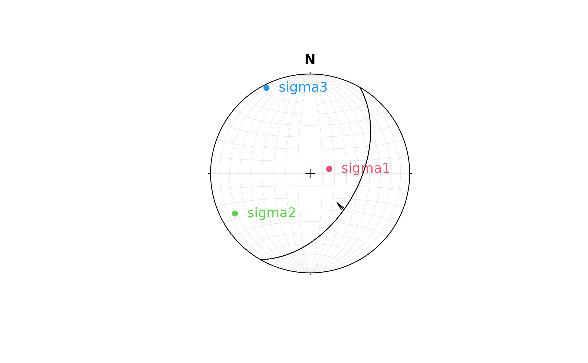

Predict Slip Direction for Given Faults and Stress Tensor
Source:R/stress_inversion.R
sigma2slip.RdForward problem: given a reduced stress tensor and one or more fault planes, predict the slip direction(s) under the Wallace-Bott hypothesis.
Arguments
- sigma
matrix of object of class
"ellipsoid". 3x3 reduced stress tensor (as returned bysigmafromslip_inversion())- normals
object of class
"Plane"of"Vec3"- tol
numeric. Convergence tolerance on max absolute change in TR elements between iterations. Defaults to
getOption("structr.tol").
Value
list.
slip_dirsVec3orRayobject of predicted slip direction vectorstau_maglength-N vector of shear traction magnitudes \(|\tau|\) (unnormalised)
degeneratelogical.
TRUEwhere \(|\tau|\) <tol(plane contains a principal stress axis — slip direction undefined)
Examples
sigma <- reduced_stress(angelier1990$AVB)
normals <- Plane(120, 50)
s <- sigma2slip(sigma, normals)
print(s)
#> $slip_dirs
#> Ray object (n = 1):
#> azimuth plunge
#> 137.47336 48.66218
#>
#> $tau_mag
#> [1] 0.9331311
#>
#> $degenerate
#> [1] FALSE
#>
plot(normals)
pr <- sigma2stress(sigma)
points(pr$axes, col = 2:4, pch = 16)
text(pr$axes, label = rownames(pr$axes), col = 2:4, adj = -.25)
stereo_arrows(s$slip_dirs, sense = -sign(s$slip_dirs[, 2]))
